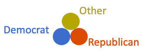
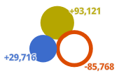
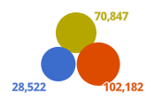

Change in U.S. presidential voting behavior from
2016
-
2020
Votes gained or lost

Increase in votes
Decrease in votes
This example from Utah County, Utah shows a significant decrease in
Republican
votes and a significant increase in
third party
votes.

2020
U.S. presidential votes per party
Results by county/state
As you zoom in, the total votes will be displayed next to the symbol.

Select an election year
2020
2016
2012
2008
2004